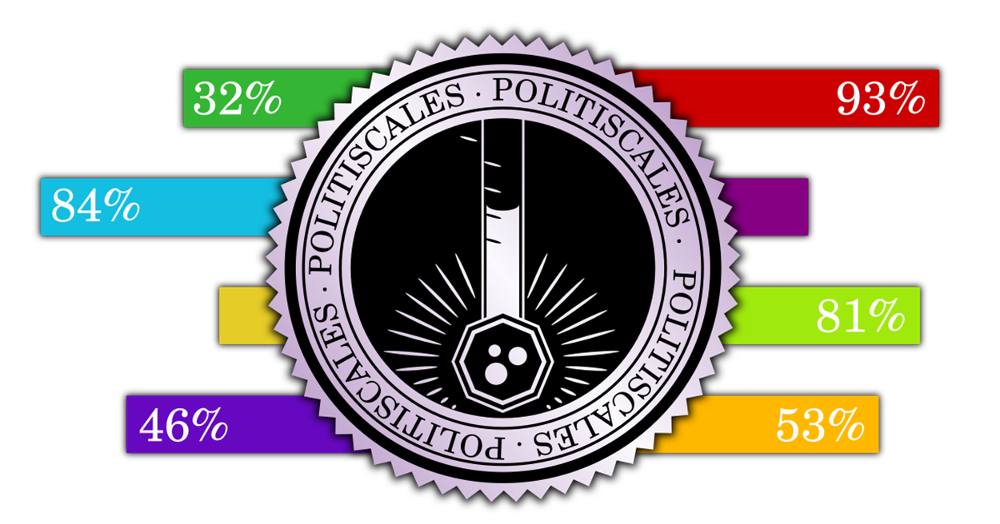

Introduktion
Velkommen til PolitiScales, den politiske test, der sætter dig ind i det politiske billede. Du vil blive konfronteret med en række udsagn. Klik på den knap, der svarer til din holdning, for hver af dem.
Spørgsmålene forudsætter, at du er borger i en nation med et politisk flerpartisystem og markedsøkonomi. Men hvis dette ikke er tilfældet, kan denne test stadig være pålidelig for et stort flertal af svarene.
Hvis du ikke forstår betydningen af et spørgsmål, kan du prøve at lave lidt research på internettet for at forstå betydningen bedre. Du må ikke angive et svar tilfældigt for ikke at forvride resultatet.
Denne test forsøger at repræsentere så mange forskellige holdninger som muligt og indeholder derfor sætninger, der kan chokere dig, især vedrørende racisme og homofobi.